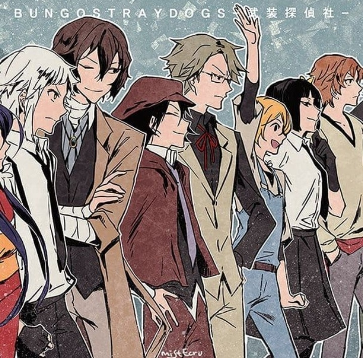
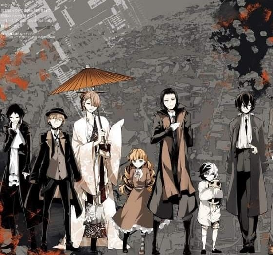
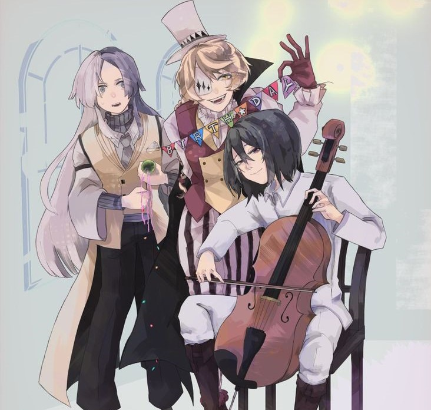

Про організації

Збройне детективне агенство
Детективне Агенство спеціалізується на розкритті злочинів, які для поліції чи військових вважаються надто жорстокими чи складними, а також надає послуги приватних детективів. Найчастіше ці злочини мають «надприродне» походження.

Портова мафія
Підпільна, злочинна організація, керована Огаєм Морі та базується в Йокогамі, Японія. Вони мають дозвіл на ведення справ, що дозволяє їм вести свою діяльність законним способом. Портова Мафія також відома як «Вартові ночі» Йокогами.

Смерть небожителів
Також відомі як Співтовариство Убивць — терористи, які ховаються в тіні цього світу. П'ятірка тих, хто проголошує кінець небесного царства.